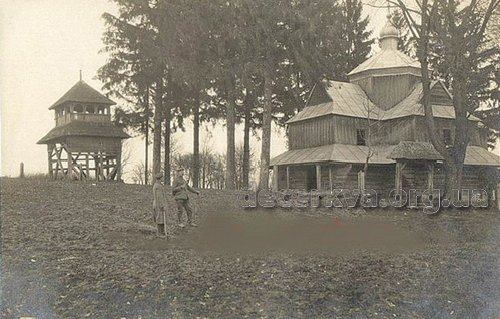

Історія

Наша
церква вперше
згадана в другій половині XVII ст. В кінці XVIII ст. в Козині, понад 150 метрів від місця де
Цей храм лише на перший погляд видається простим і зрозумілим. Після розкішного барокового дива дзвіниці
Софія Київська здається приземкуватою і трохи незграбною. Та варто пригадати, що перед нами застигли в
камені десять століть — і незграбність обернеться надійністю та нашаруванням історичних віх. Варто зайти
досередини — і назавжди зникне відчуття приземкуватості, бо змінювати, збільшувати простір вмів не лише
булгаківський Воланд, а й давньоруські майстри.
Історія не зберегла імен будівничих цього прадавнього дива. Швидше за все, це були запрошені князем
візантійські майстри. Чи не найкращий доказ їхньої майстерності: фундамент храму. Минуло вже тисячоліття — а
він все ще як єдиний моноліт, а досягти такого на просадочних київських грунтах ой як непросто! Лише над
розписом інтер’єрів працювало близько 30 художників (а фресок в церкві 3 000 м. кв.). А збережені в Софії
мозаїки ХІ ст. є найбільшими в світі: 260 квадратних метрів. Це своєрідна книга, яку можна читати зліва
направо і зверху вниз — і не лише тому, що біля кожної мозаїчної композиції збереглися написи грецькою
мовою, що пояснюють сюжет. Фрески та мозаїки, виконані на золотому фоні в стриманій, але гарно підібраній
гамі, можна поділити на три групи: євангельські легенди, біблійні перекази та житійний цикл, присвячений
покровителям князівського роду, святим Георгію, Анні та архангелу Михаїлу. Лише відтінків смальти зеленого
кольору тут 34, а золотого
Наступна церква з дерева, яка збереглася сьогодні, постала на новому місці у 1806 році. Була філіяльною
парафіяльної церкви Успення Пр. Богородиці
в Крилосі. На початку ХХ ст. дахи церкви перекрили бляхою. Святиня пошкоджена під час Першої світової
війни,
відновлена у 1920-х роках. Сьогодні церква в кристуванні громади УГКЦ, не є пам'яткою архітектури.
В складі історико-архітектурного заповідника «Софія Київська» не лише храм, а й споруди навколо нього
(загальна площа заповідника 5 га). За ними можна залюбки вивчати історію української архітектури. Ось
південна в’їздна башта (XVIII ст.), яка слугує входом на територію заповідника з вул. Володимирської. Колись
сюди заїжджали вози з продуктами для монастиря, а в самій башті зберігався консисторський архів. Поруч з
баштою — келійний корпус (ХІХ ст.). А якщо на вул. Володимирській повернути праворуч в Георгіївський
провулок, можна вийти до ошатної брами Заборовського (1746) та залишків монастирського муру (XVIII ст.).
Брама названа на честь митрополита Рафаїла Заборовського, замовника цього шедевру.

Церква розташовується в центрі села, на цвинтарі. Невелика за розмірами хрещата в плані з
укороченими бічними раменами одноверха споруда, в якій до вівтаря з півночі прилягає ризниця. а до бабинця з
заходу
- рівноширокий присінок. Станом на 2014 рік церква виглядала тривалий час не ремонтованою, проте у 2017 році
зовні
церкву повністю відреставрували. З північного заходу від церкви збудували нову муровано-дерев'яну дзвіницю.
Стара
дерев'яна одноярусна дзвіниця стоїть на північному краю цвинтаря.
Напроти головного входу в храм розташований митрополичий будинок (1722-1730, пізніші перебудови), а на північ
від Софії стоїть двоповерхове приміщення бурси (1763-1767, архітектори М.Юрасов, П.Папов). Варта уваги й
Консисторія, колишня хлібня (1722-1730), яка знаходиться в південно-західній частині заповідника. Та
найвпізнавпнішою пам’яткою з почту Софії є все-таки прикрашена багатим різьбленням чотириярусна дзвіниця
(1699-1706, 1744-1748). В споруди не дарма дві «дати народження»: на початку XVIII ст. її верхні яруси були
зруйновані землетрусом, тож під керівництвом архітектора Й.Шеделя майстри розібрали їх — і створили нові яруси.
Ліпниною «завідували» западенці з Жовкви: умільці Іван та Степан Стобенські.